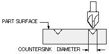
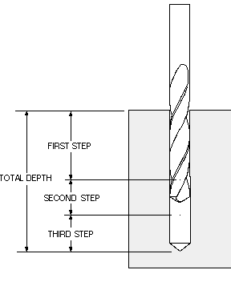

循环参数定义精确的刀具运动和条件，如进给率、驻留时间和切削增量。
如果要改变任何循环参数值，可为每个孔或一组孔创建“循环参数集”。每个循环最多可拥有五个参数集。
选项 |
描述 |
||
|---|---|---|---|
|
深度 |
打开循环深度对话框，可使用多个选项中的某一选项在该对话框中指定切削深度。该值表示从部件表面到刀尖的总的孔深。此选项对于标准钻，埋头孔不可用。 要获取更多信息，参见 循环深度对话框。 |
||
进给率 |
打开循环进给率对话框，在其中指定切削时的刀具过渡速度。显示当前的“进给率单位和值”。 可将“进给率”设置为 IPM 或 IPR（对于非公制部件），或者设置为 MMPM 或 MMPR（对于公制部件）。 |
||
驻留 |
打开循环驻留对话框，在其中以秒数或转数形式设置刀具在指定切削深度的延迟时间。 对于“啄钻”和“断屑”仿真循环，如果以秒数或转数形式指定了驻留值，软件将生成 DELAY/t 或 DELAY/REV,r 命令语句，以便在刀具进给到指定深度时激活所需的驻留。大写的词为标准 APT 词汇；t 表示以秒表示的驻留值，r 表示以转数表示的驻留值。
|
||
选项 |
打开或关闭特定机床独有的加工特性。此选项与后处理器相关。如果打开此选项，软件将在 CYCLE/ 语句中加入 OPTION。 |
||
|
CAM |
为没有可编程 Z 轴的机床指定刀具深度的预设 CAM 停止位置。
|
||
|
埋头孔直径 |
设定埋头孔的直径。软件将您指定的埋头孔直径作为 CSKDIA,d 参数加入 CYCLE/DRILL,CSINK 语句中。  |
||
入口直径 |
指定现有孔的外径，该孔将通过埋头孔工序扩大。 “入口直径”表示进行埋头孔加工之前现有孔的直径。此选项仅可用于标准钻，埋头孔循环。 入口直径 d 指定将要进行埋头孔加工的现有孔的直径。如果 d 为非零值，软件将在 CYCLE 语句中加入 HOLDIA,d 参数。后处理器通常使用此参数来计算一个孔内的快速定位点。刀具在钻入孔前首先移动到孔中心线之上的一个安全点处。 |
||
增量 |
在“啄钻”和“断屑”钻孔工序中使用一系列规则连续切削，以到达级进深度，“增量”用于指定其中一次切削的尺寸值。
|
||
|
退刀 |
指定退刀距离。距离是沿“刀轴”从“部件表面”测量到刀具进给至指定深度后退刀的点。除标准镗，手工退刀外，此选项可用于所有“标准”循环。
|
||
|
步进值 |
在标准钻，深孔和标准钻，断屑循环中使用一系列规则连续切削，以到达级进深度，“步进值”用于指定其中一次切削的尺寸值。 软件在 CYCLE 语句中加入 STEP, S1, S2, ...., Sn 参数字符串。  |